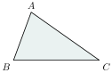

[cite: 51]
វត្ថុបំណង
[cite: 51]
- ប្រាប់បានពីសញ្ញាណពហុកោណ[cite: 51]
- កំណត់និយមន័យនិងលក្ខណៈទូទៅនៃត្រីកោណ[cite: 51]
- រកផលបូកមុំក្នុងនៃត្រីកោណនិងមុំក្រៅនៃត្រីកោណ[cite: 51]
- កំណត់លក្ខណៈទូទៅនៃចតុកោណ ចតុកោណកែង និងការ៉េ[cite: 51]
- សង់ត្រីកោណ ចតុកោណកែង និងការ៉េ ។[cite: 51]
1. ពហុកោណ
[cite: 51]
1.1. សញ្ញាណពហុកោណ
[cite: 51] ពហុកោណជាផ្នែកមួយនៃប្លង់ខណ្ឌដោយខ្សែកាច់បិទជិត ។ គេមានពហុកោណប៉ោងនិងពហុកោណផត ។[cite: 51] ពហុកោណប៉ោងជាពហុកោណដែលស្ថិតនៅតែម្ខាងធៀបនឹងជ្រុងណាមួយ ។[cite: 51]
ពហុកោណប៉ោង[cite: 51] ពហុកោណផត[cite: 51]
- ចំណុច \(\displaystyle A, B, C, D, E\) និង \(\displaystyle F\) ជាកំពូលនៃពហុកោណប៉ោង ។[cite: 51]
- អង្កត់ \(\displaystyle AB, BC, CD, DE, EF\) និង \(\displaystyle FA\) ជាជ្រុងនៃពហុកោណប៉ោង ។[cite: 51]
- អង្កត់ \(\displaystyle AC, AD, AE,\dots, FD\) ជាអង្កត់ទ្រូងនៃពហុកោណប៉ោង ។[cite: 51]
- មុំ \(\displaystyle \angle ABC, \angle BCD, \angle CDE, \angle DEF, \angle EFA\) និង \(\displaystyle \angle FAB\) ជាមុំក្នុងនៃពហុកោណប៉ោង \(\displaystyle ABCDEF\) ។[cite: 51]
1.2. ប្រភេទពហុកោណប៉ោង
[cite: 52] គេកំណត់ប្រភេទពហុកោណទៅតាមចំនួនជ្រុងរបស់វា ។[cite: 52]
ជាទូទៅ[cite: 52] ត្រីកោណ (ជ្រុង 3) ចតុកោណ (ជ្រុង 4) បញ្ចកោណ (ជ្រុង 5) ឆកោណ (ជ្រុង 6)[cite: 52] សប្តកោណ (ជ្រុង 7) អដ្ឋកោណ (ជ្រុង 8) នពវកោណ (ជ្រុង 9) ទសកោណ (ជ្រុង 10)[cite: 52]
2. ត្រីកោណ
[cite: 52]
2.1. និយមន័យ
[cite: 52] ពហុកោណមានជ្រុង 3 ហៅថា ត្រីកោណ ។ គេកំណត់សរសេរ \(\displaystyle \Delta ABC\) អានថាត្រីកោណ \(\displaystyle ABC\) ។[cite: 52] ចំណុច \(\displaystyle A, B\) និង \(\displaystyle C\) ហៅថា កំពូលនៃត្រីកោណ ។[cite: 52] អង្កត់ \(\displaystyle AB, BC\) និង \(\displaystyle CA\) ហៅថា ជ្រុងនៃត្រីកោណ ។[cite: 52] \(\displaystyle \angle BAC\) ឬ \(\displaystyle \angle A\), \(\displaystyle \angle ABC\) ឬ \(\displaystyle \angle B\), \(\displaystyle \angle ACB\) ឬ \(\displaystyle \angle C\) ហៅថា មុំក្នុងនៃត្រីកោណ \(\displaystyle ABC\) ។[cite: 52]
សម្គាល់៖ គេអាចហៅថាត្រីកោណ \(\displaystyle ABC\) ឬ \(\displaystyle BCA\) ឬ \(\displaystyle CAB\) ។[cite: 52] ជ្រុងនិងមុំនៃត្រីកោណហៅថា ធាតុនៃត្រីកោណ ។[cite: 52] ត្រីកោណមួយមានធាតុ 9 គឺ មុំបី ជ្រុងបី និងកំពូលបី ។[cite: 52] គេថា \(\displaystyle \angle A\) ជាមុំឈមនឹងជ្រុង \(\displaystyle BC\) ហើយ \(\displaystyle \angle A\) និង \(\displaystyle \angle B\) ជាមុំជាប់នឹងជ្រុង \(\displaystyle AB\) ។[cite: 52]
1.2. លក្ខណៈទូទៅនៃត្រីកោណ
[cite: 52]
| ជាទូទៅ | មេដ្យាន | រូបភាពកំពុងរៀបចំ |
| 1. \(\displaystyle M\) ចំណុចកណ្តាលនៃជ្រុង \(\displaystyle BC\) ។ អង្កត់ \(\displaystyle AM\) ហៅថាមេដ្យាននៃ \(\displaystyle \Delta ABC\) ត្រូវនឹងជ្រុង \(\displaystyle BC\) ។ | ||
| 2. មេដ្យាននៃ \(\displaystyle \Delta ABC\) គឺជាអង្កត់ដែលភ្ជាប់ពីកំពូលទៅចំណុចកណ្តាលនៃជ្រុងឈម ។ | ||
| ជាទូទៅ | កម្ពស់ | រូបភាពកំពុងរៀបចំ |
| 1. \(\displaystyle AH \perp BC\) | ||
| 2. អង្កត់ \(\displaystyle AH\) ហៅថាកម្ពស់នៃ \(\displaystyle \Delta ABC\) ត្រូវនឹងជ្រុង \(\displaystyle BC\) ។ | ||
| 3. កម្ពស់នៃ \(\displaystyle \Delta ABC\) គឺជាអង្កត់ដែលគូសចេញពីកំពូលទៅកែងនឹងជ្រុងឈម ឬបន្ទាយនៃជ្រុងឈម ។ | ||
| ជាទូទៅ | មេដ្យាទ័រ | រូបភាពកំពុងរៀបចំ |
| 1. \(\displaystyle M\) ចំណុចកណ្តាលនៃជ្រុង \(\displaystyle BC\) ដែល \(\displaystyle d \perp BC\) ត្រង់ \(\displaystyle M\) ។ បន្ទាត់ \(\displaystyle d\) ហៅថាមេដ្យាទ័រនៃ \(\displaystyle \Delta ABC\) ត្រូវនឹងជ្រុង \(\displaystyle BC\) ។ | ||
| 2. មេដ្យាទ័រនៃ \(\displaystyle \Delta ABC\) គឺជាបន្ទាត់ដែលកែងនឹងជ្រុងត្រង់ចំណុចកណ្តាល ។ | ||
| ជាទូទៅ | កន្លះបន្ទាត់ពុះមុំ | រូបភាពកំពុងរៀបចំ |
| 1. \(\displaystyle \angle BAI = \angle IAC\) | ||
| 2. \(\displaystyle [AI)\) ហៅថាកន្លះបន្ទាត់ពុះក្នុងនៃមុំ \(\displaystyle \angle A\) របស់ \(\displaystyle \Delta ABC\) ។ | ||
| 3. កន្លះបន្ទាត់ពុះមុំក្នុងនៃ \(\displaystyle \Delta ABC\) គឺជាកន្លះបន្ទាត់ដែលពុះចែកមុំក្នុងជាពីរផ្នែកប៉ុនគ្នា ។ |
[cite: 52]
លំហាត់គំរូ ៖ គូសត្រីកោណ \(\displaystyle ABC\) មួយ រួចសង់ចំណុចដូចខាងក្រោមនេះ៖[cite: 53] \(\displaystyle I\) ជាចំណោលកែងនៃចំណុច \(\displaystyle A\) លើបន្ទាត់ \(\displaystyle BC\), \(\displaystyle J\) ជាចំណោលកែងនៃចំណុច \(\displaystyle I\) លើបន្ទាត់ \(\displaystyle AB\), \(\displaystyle K\) ជាចំណោលកែងនៃចំណុច \(\displaystyle I\) លើបន្ទាត់ \(\displaystyle AC\), \(\displaystyle L\) ជាចំណោលកែងនៃចំណុច \(\displaystyle K\) លើបន្ទាត់ \(\displaystyle BC\), \(\displaystyle M\) ជាចំណុចកណ្តាលនៃជ្រុង \(\displaystyle BC\) ។[cite: 53] បន្ទាត់ \(\displaystyle d\) កែងនឹងជ្រុង \(\displaystyle BC\) ត្រង់ចំណុច \(\displaystyle M\) ។[cite: 53]
ក. តើអង្កត់ \(\displaystyle AI\) តាងអ្វីចំពោះត្រីកោណ \(\displaystyle ABC\) ?[cite: 53] ខ. តើអង្កត់ \(\displaystyle IJ\) តាងអ្វីចំពោះត្រីកោណ \(\displaystyle ABI\) ?[cite: 53] គ. តើអង្កត់ \(\displaystyle AM\) តាងអ្វីចំពោះត្រីកោណ \(\displaystyle ABC\) ?[cite: 53] ឃ. តើបន្ទាត់ \(\displaystyle d\) តាងអ្វីចំពោះជ្រុង \(\displaystyle BC\) នៃត្រីកោណ \(\displaystyle ABC\) ?[cite: 53] ង. បង្ហាញថាបន្ទាត់ \(\displaystyle AI \parallel KL\)[cite: 53]
ដំណោះស្រាយ ៖[cite: 53] ក. ដោយ \(\displaystyle I\) ជាចំណោលកែងនៃចំណុច \(\displaystyle A\) លើ \(\displaystyle BC\) នោះ \(\displaystyle AI \perp BC\)[cite: 53] គេបាន \(\displaystyle AI\) ជាកម្ពស់នៃត្រីកោណ \(\displaystyle ABC\) ។[cite: 53] ខ. ដោយ \(\displaystyle J\) ជាចំណោលកែងនៃចំណុច \(\displaystyle I\) លើ \(\displaystyle AB\) នោះ \(\displaystyle IJ \perp AB\)[cite: 53] គេបាន \(\displaystyle IJ\) ជាកម្ពស់នៃត្រីកោណ \(\displaystyle ABI\) ។[cite: 53] គ. ដោយ \(\displaystyle M\) ជាចំណុចកណ្តាលនៃជ្រុង \(\displaystyle BC\)[cite: 53] នោះ \(\displaystyle AM\) ជាមេដ្យាននៃត្រីកោណ \(\displaystyle ABC\) ។[cite: 53] ឃ. ដោយបន្ទាត់ \(\displaystyle d \perp BC\) ត្រង់ \(\displaystyle M\) ជាចំណុចកណ្តាលនៃជ្រុង \(\displaystyle BC\) នោះបន្ទាត់ \(\displaystyle d\) មេដ្យាទ័រនៃត្រីកោណ \(\displaystyle ABC\) ។[cite: 53] ង. បង្ហាញថាបន្ទាត់ \(\displaystyle AI \parallel KL\)[cite: 53] គេមាន \(\displaystyle AI \perp BC\) ហើយ \(\displaystyle KL \perp BC\) នោះ \(\displaystyle AI \parallel KL\) ។[cite: 53]
1.3. ប្រភេទត្រីកោណ
[cite: 53] គេកំណត់ប្រភេទត្រីកោណទៅតាមមុំនិងជ្រុងរបស់វា[cite: 53]
| រូប | ឈ្មោះ | លក្ខណៈ |
 | ត្រីកោណសាមញ្ញ | មុំទាំងបីមិនប៉ុនគ្នា \(\displaystyle \angle A \ne \angle B \ne \angle C\) |
| ជ្រុងទាំងបីមិនប៉ុនគ្នា \(\displaystyle AB \ne BC \ne CA\) | ||
រូបភាពកំពុងរៀបចំ | ត្រីកោណកែង | មុំកែងមួយ \(\displaystyle \angle A\) ជាមុំកែង |
| ជ្រុង \(\displaystyle AB \perp AC\) | ||
រូបភាពកំពុងរៀបចំ | ត្រីកោណសមបាត | មុំពីរប៉ុនគ្នា \(\displaystyle \angle B = \angle C\) |
| ជ្រុងពីរប៉ុនគ្នា \(\displaystyle AB=AC\) | ||
រូបភាពកំពុងរៀបចំ | ត្រីកោណសម័ង្ស | មុំទាំងបីប៉ុនគ្នា \(\displaystyle \angle A = \angle B = \angle C\) |
| ជ្រុងទាំងបីប៉ុនគ្នា \(\displaystyle AB=BC=CA\) |
[cite: 53]
ប្រតិបត្តិ ៖ គូសត្រីកោណសមបាត \(\displaystyle ABC\) ដែលមានកំពូល \(\displaystyle A\) ។ ដៅ \(\displaystyle I\) ជាចំណុចកណ្តាលនៃបាត \(\displaystyle BC\) ។ គូសកម្ពស់នៃត្រីកោណ \(\displaystyle ABC\) ចេញពីកំពូល \(\displaystyle B\) និង \(\displaystyle C\) ។[cite: 53] តាង \(\displaystyle E\) ជាប្រសព្វរវាងកម្ពស់ទាំងពីរនេះ ។[cite: 53] ក. តើបន្ទាត់ \(\displaystyle AE\) តាងអ្វីចំពោះត្រីកោណ \(\displaystyle ABC\) ? ព្រោះអ្វី?[cite: 53] ខ. បង្ហាញថាចំណុច \(\displaystyle A, E\) និង \(\displaystyle I\) រត់ត្រង់គ្នា ។[cite: 53] ចម្លើយ ៖ ក. \(\displaystyle E\) អរតូសង់, \(\displaystyle AE\) កម្ពស់ ខ. \(\displaystyle A, E\) និង \(\displaystyle I\) រត់ត្រង់គ្នា(\(\displaystyle I\) កណ្តាល \(\displaystyle BC\)) ។[cite: 53]
សម្គាល់៖ គេអាចកំណត់ប្រភេទត្រីកោណកែងទៅតាមមុំនិងជ្រុងរបស់វាដូចជា[cite: 54] ត្រីកោណកែងសមបាត[cite: 54] ត្រីកោណកន្លះសម័ង្ស[cite: 54]
លំហាត់គំរូ ៖ ប្រាប់ប្រភេទត្រីកោណនីមួយៗខាងក្រោម តាមជ្រុងនិងមុំ ។[cite: 54]
ដំណោះស្រាយ ៖[cite: 54] រូបទី 1 ត្រីកោណ \(\displaystyle ABC\) មានមុំកែងមួយ ជាត្រីកោណកែង ។[cite: 54] រូបទី 2 ត្រីកោណ \(\displaystyle EGF\) មានជ្រុងពីរ ឬមុំបាតពីរមានរង្វាស់ស្មើគ្នា ជាត្រីកោណសមបាត ។[cite: 54] រូបទី 3 ត្រីកោណ \(\displaystyle MNP\) មានជ្រុងទាំងបី ឬមុំទាំងបីមានរង្វាស់មិនស្មើគ្នា ជាត្រីកោណសាមញ្ញ ។[cite: 54] រូបទី 4 ត្រីកោណ \(\displaystyle QRS\) មានជ្រុងទាំងបី ឬមុំទាំងបីមានរង្វាស់ស្មើគ្នា ជាត្រីកោណសម័ង្ស ។[cite: 54]
ប្រតិបត្តិ ៖ ប្រាប់ប្រភេទត្រីកោណនីមួយៗខាងក្រោមតាមមុំ ។[cite: 54]
ចម្លើយ ៖ \(\displaystyle \Delta A_1B_1C_1\) ជាត្រីកោណសាមញ្ញ \(\displaystyle \Delta A_2B_2C_2\) ជាត្រីកោណសមបាត \(\displaystyle \Delta A_3B_3C_3\) ជាត្រីកោណកែង ។[cite: 54]
1.4. ផលបូកមុំក្នុង និងមុំក្រៅត្រីកោណ
[cite: 54] 1.4.1. ផលបូកមុំក្នុងត្រីកោណ[cite: 54] តាមកំពូល \(\displaystyle A\) នៃត្រីកោណ \(\displaystyle ABC\) គេគូសបន្ទាត់ \(\displaystyle xy \parallel BC\) ។[cite: 54] គេបាន[cite: 54] \(\displaystyle \angle A + \angle A_1 + \angle A_2 = 180^\circ\) (មុំជាប់បន្ថែម)[cite: 54] ប៉ុន្តែ \(\displaystyle \angle A_1 = \angle B\) (មុំឆ្លាស់ក្នុង)[cite: 54] \(\displaystyle \angle A_2 = \angle C\) (មុំឆ្លាស់ក្នុង)[cite: 54] ដូច្នេះ \(\displaystyle \angle A + \angle B + \angle C = 180^\circ\) ។[cite: 54]
ជាទូទៅ[cite: 54] ផលបូកមុំក្នុងទាំងបីនៃត្រីកោណស្មើនឹង \(\displaystyle 180^\circ\) ។[cite: 54]
វិបាក : \(\displaystyle \angle B + \angle C = 90^\circ\)[cite: 54] \(\displaystyle \angle B = \angle C = 45^\circ\)[cite: 54] \(\displaystyle \angle A = \angle B = \angle C = 60^\circ\)[cite: 54]
លំហាត់គំរូ 1 ៖ គណនាមុំ \(\displaystyle x\) ក្នុងរូបខាងស្តាំ ។[cite: 54]
ដំណោះស្រាយ ៖ គេមាន[cite: 54] \(\displaystyle x + 70^\circ + 47^\circ = 180^\circ\) (ផលបូកមុំក្នុង)[cite: 54] \(\displaystyle x + 117^\circ = 180^\circ\)[cite: 54] \(\displaystyle x = 180^\circ - 117^\circ = 63^\circ\)[cite: 54] ដូច្នេះ \(\displaystyle x = 63^\circ\) ។[cite: 54]
លំហាត់គំរូ 2 ៖ គណនាមុំ \(\displaystyle x\) ក្នុងរូបខាងស្តាំ ។[cite: 54]
ដំណោះស្រាយ ៖ គេមាន[cite: 54] \(\displaystyle 2x + 38^\circ + 38^\circ = 180^\circ\) (\(\displaystyle 38^\circ\) ជារង្វាស់មុំបាតនៃត្រីកោណសមបាត)[cite: 54] \(\displaystyle 2x = 180^\circ - 76^\circ = 104^\circ\)[cite: 54] \(\displaystyle x = \frac{104^\circ}{2}\)[cite: 54] ដូច្នេះមុំ \(\displaystyle x = 52^\circ\) ។[cite: 54]
2.4.2. ទំនាក់ទំនងរវាងមុំក្នុងនិងមុំក្រៅ[cite: 55] \(\displaystyle \angle ACx\) ហៅថា មុំក្រៅត្រង់ \(\displaystyle C\) នៃ \(\displaystyle \Delta ABC\)[cite: 55] \(\displaystyle \angle CBy\) ហៅថា មុំក្រៅត្រង់ \(\displaystyle B\) នៃ \(\displaystyle \Delta ABC\)[cite: 55] \(\displaystyle \angle BAz\) ហៅថា មុំក្រៅត្រង់ \(\displaystyle A\) នៃ \(\displaystyle \Delta ABC\)[cite: 55]
គេដឹងថា[cite: 55] \(\displaystyle \angle A + \angle B + \angle C = 180^\circ\) (ផលបូកមុំក្នុង)[cite: 55] \(\displaystyle \angle A + \angle BAz = 180^\circ\) (មុំជាប់បន្ថែម)[cite: 55] \(\displaystyle \angle A + \angle BAz = \angle A + \angle B + \angle C\)[cite: 55] \(\displaystyle \angle BAz = \angle B + \angle C\)[cite: 55] ដូច្នេះ \(\displaystyle \angle BAz = \angle B + \angle C\) ។[cite: 55]
ជាទូទៅ[cite: 55] មុំក្រៅមួយនៃត្រីកោណស្មើនិងផលបូកមុំក្នុងពីរទៀតដែលមិនជាប់នឹងវា ។[cite: 55]
ឧទាហរណ៍ 1 ៖[cite: 55]
\(\displaystyle 110^\circ = 63^\circ + 47^\circ\)[cite: 55] \(\displaystyle 77^\circ = 30^\circ + 47^\circ\)[cite: 55]
ឧទាហរណ៍ 2 ៖ គណនាមុំ \(\displaystyle x\) និង \(\displaystyle y\) ក្នុងរូបខាងស្តាំ ។[cite: 55]
គេមាន[cite: 55] \(\displaystyle y + 99^\circ + 39^\circ = 180^\circ\) (ផលបូកមុំក្នុង)[cite: 55] \(\displaystyle y = 180^\circ - 138^\circ = 42^\circ\)[cite: 55] ដូច្នេះមុំ \(\displaystyle y = 42^\circ\) ។[cite: 55]
គេមាន[cite: 55] \(\displaystyle x = 99^\circ + 39^\circ\) (មុំក្រៅ)[cite: 55] \(\displaystyle x = 138^\circ\)[cite: 55] ដូច្នេះមុំ \(\displaystyle x = 138^\circ\) ។[cite: 55]
លំហាត់គំរូ ៖ គណនាមុំ \(\displaystyle x\) ក្នុងរូបខាងស្តាំនេះ ។[cite: 55] ដំណោះស្រាយ ៖ គណនាមុំ \(\displaystyle x\)[cite: 55] \(\displaystyle \angle MPN + 141^\circ = 180^\circ\) (មុំជាប់បន្ថែម)[cite: 55] \(\displaystyle \angle MPN = 180^\circ - 141^\circ = 39^\circ\)[cite: 55] គេមាន \(\displaystyle x = 99^\circ + 39^\circ\) (មុំក្រៅ)[cite: 55] \(\displaystyle x = 138^\circ\)[cite: 55] ដូច្នេះមុំ \(\displaystyle x = 138^\circ\) ។[cite: 55]
ប្រតិបត្តិ ៖ ក្នុងរូបខាងក្រោមនេះ គណនាមុំ \(\displaystyle x\) និង \(\displaystyle y\) ។[cite: 55]
ចម្លើយ ៖[cite: 55] ក. \(\displaystyle \angle x = 74^\circ, \angle y = 47^\circ\)[cite: 55] ខ. \(\displaystyle \angle x = 79^\circ\)[cite: 55] គ. \(\displaystyle \angle x = 72^\circ, \angle y = 108^\circ\) ។[cite: 55]
2.5. ការសង់ត្រីកោណ
[cite: 55] ឧទាហរណ៍ 1 ៖ សង់ត្រីកោណ \(\displaystyle ABC\) ដោយស្គាល់ \(\displaystyle \angle A = 60^\circ\), \(\displaystyle AB = 4\text{ cm}\), \(\displaystyle AC = 5\text{ cm}\) ។[cite: 55] សំណង់ ៖ ប្រើបន្ទាត់ក្រិតគូសអង្កត់ \(\displaystyle AC = 5\text{ cm}\) និងប្រើរ៉ាប៉ទ័រគូស \(\displaystyle \angle CAx = 60^\circ\) ហើយដៅចំណុច \(\displaystyle B\) នៅលើ \(\displaystyle Ax\) ដែល \(\displaystyle AB = 4\text{ cm}\) រួចទាញភ្ជាប់ឱ្យបានអង្កត់ \(\displaystyle CB\) គេបានត្រីកោណ \(\displaystyle ABC\) ។[cite: 55]
ឧទាហរណ៍ 2 ៖ សង់ត្រីកោណ \(\displaystyle ABC\) ដោយស្គាល់ \(\displaystyle \angle A = 30^\circ\), \(\displaystyle AC = 5\text{cm}\), \(\displaystyle \angle C = 55^\circ\)[cite: 55] សំណង់ ៖ ប្រើបន្ទាត់ក្រិតគូសអង្កត់ \(\displaystyle AC = 5\text{cm}\) និងប្រើរ៉ាប៉ទ័រគូស \(\displaystyle \angle CAx = 30^\circ\) និង \(\displaystyle \angle ACy = 55^\circ\) បន្ទាប់មកគូស \(\displaystyle Ax\) និង \(\displaystyle Cy\) ប្រសព្វគ្នាត្រង់ចំណុច \(\displaystyle B\) គេបានត្រីកោណ \(\displaystyle ABC\) ។[cite: 55]
ឧទាហរណ៍ 3 ៖ សង់ត្រីកោណ \(\displaystyle ABC\) ដោយស្គាល់ \(\displaystyle AB = 3\text{ cm}, BC = 6\text{ cm}, AC = 7\text{ cm}\) ។[cite: 55] សំណង់ ៖ ប្រើបន្ទាត់ក្រិតគូសអង្កត់ \(\displaystyle AC = 7\text{ cm}\) បន្ទាប់មកគូសធ្នូរង្វង់ផ្ចិត \(\displaystyle A\) កាំ 3 cm និងគូសធ្នូរង្វង់ផ្ចិត \(\displaystyle C\) កាំ 6 cm ធ្នូរង្វង់ទាំងពីរប្រសព្វគ្នាត្រង់ចំណុច \(\displaystyle B\) រួចគូសភ្ជាប់អង្កត់ \(\displaystyle AB\) និង \(\displaystyle BC\) គេបានត្រីកោណ \(\displaystyle ABC\) ។[cite: 56]
ប្រតិបត្តិ ៖[cite: 56] ក. សង់ត្រីកោណសមបាត \(\displaystyle ABC\) ដោយស្គាល់បាត \(\displaystyle BC = 5\text{ cm}\) និងជ្រុង \(\displaystyle AB=AC=3\text{ cm}\)[cite: 56] ខ. សង់ត្រីកោណ \(\displaystyle ABC\) ដោយស្គាល់ \(\displaystyle \angle A = 60^\circ, BC = 5\text{ cm}, AC = 4\text{ cm}\) ។[cite: 56] គ. គេឱ្យត្រីកោណ \(\displaystyle ABC\) មួយ ។ សង់ត្រីកោណ \(\displaystyle DEF\) ដោយដឹងថា \(\displaystyle \Delta DEF\) ត្រួតស៊ីគ្នានឹង \(\displaystyle \Delta ABC\) ។[cite: 56]
3. ចតុកោណ
[cite: 56]
3.1. សញ្ញាណ
[cite: 56] ចតុកោណជាពហុកោណដែលមានជ្រុង 4 ។[cite: 56]
| ឈ្មោះ | រូប | លក្ខណៈ |
| ចតុកោណប៉ោង | រូបភាពកំពុងរៀបចំ | ចតុកោណប៉ោង ជាចតុកោណដែលឋិតនៅតែម្ខាងធៀបនឹងជ្រុងណាមួយ ។ \(\displaystyle A\) និង \(\displaystyle C\), \(\displaystyle B\) និង \(\displaystyle D\) ជាកំពូលឈមគ្នា ។ \(\displaystyle AB\) និង \(\displaystyle CD\), \(\displaystyle AD\) និង \(\displaystyle BC\) ជាជ្រុងឈមគ្នា ។ \(\displaystyle \angle A\) និង \(\displaystyle \angle C\), \(\displaystyle \angle B\) និង \(\displaystyle \angle D\) ជាមុំឈមគ្នា ។ \(\displaystyle \angle A\) និង \(\displaystyle \angle B\), \(\displaystyle \angle B\) និង \(\displaystyle \angle C\) ជាមុំជាប់នឹងជ្រុងតែមួយ ។ \(\displaystyle AC\) និង \(\displaystyle BD\) ជាអង្កត់ទ្រូង ។ |
| ចតុកោណខ្វែង | រូបភាពកំពុងរៀបចំ | ចតុកោណខ្វែង ជាចតុកោណដែលមានជ្រុងកាត់គ្នាត្រង់ចំណុចមួយដែលមិនមែនជាកំពូលនៃចតុកោណ ។ ជ្រុង \(\displaystyle AC\) និង \(\displaystyle BD\) កាត់គ្នាត្រង់ចំណុច \(\displaystyle O\) ដែលមិនមែនជាកំពូលនៃចតុកោណ ។ |
| ចតុកោណផត | រូបភាពកំពុងរៀបចំ | ចតុកោណផត ជាចតុកោណដែលមានបន្លាយនៃជ្រុងមួយកាត់ជ្រុងផ្សេងទៀតនៃចតុកោណ ។ បន្លាយនៃជ្រុង \(\displaystyle AD\) កាត់ជ្រុង \(\displaystyle BC\) ឬបន្លាយនៃជ្រុង \(\displaystyle CD\) កាត់ជ្រុង \(\displaystyle AB\) |
[cite: 56]
លំហាត់គំរូ ៖ គេមានចតុកោណ \(\displaystyle ABCD\) ។ រាប់ឈ្មោះ ៖[cite: 56] ក. ជ្រុងឈមពីរគូ[cite: 56] ខ. ជ្រុងជាប់តគ្នាបួនគូ[cite: 56] គ. មុំឈមពីរគូ[cite: 56] ឃ. កំពូលជាប់តគ្នាបួនគូ[cite: 56] ង. មុំជាប់តគ្នាបួនគូ ។[cite: 56] ដំណោះស្រាយ ៖ ក. ជ្រុងឈមពីរគូគឺ \(\displaystyle AB\) និង \(\displaystyle DC\), \(\displaystyle AD\) និង \(\displaystyle BC\)[cite: 56] ខ. ជ្រុងជាប់តគ្នាបួនគូ \(\displaystyle AB\) និង \(\displaystyle BC\), \(\displaystyle BC\) និង \(\displaystyle DC\), \(\displaystyle CD\) និង \(\displaystyle DA\), \(\displaystyle DA\) និង \(\displaystyle AB\)[cite: 56] គ. មុំឈមពីរគូគឺ \(\displaystyle \angle A\) និង \(\displaystyle \angle C\), \(\displaystyle \angle B\) និង \(\displaystyle \angle D\)[cite: 56] ឃ. កំពូលជាប់តគ្នាបួនគូ \(\displaystyle A\) និង \(\displaystyle B\), \(\displaystyle B\) និង \(\displaystyle C\), \(\displaystyle C\) និង \(\displaystyle D\), \(\displaystyle D\) និង \(\displaystyle A\)[cite: 56] ង. មុំជាប់តគ្នាបួនគូគឺ \(\displaystyle \angle A\) និង \(\displaystyle \angle B\), \(\displaystyle \angle B\) និង \(\displaystyle \angle C\), \(\displaystyle \angle C\) និង \(\displaystyle \angle D\), \(\displaystyle \angle D\) និង \(\displaystyle \angle A\) ។[cite: 56]
1.3. ប្រភេទចតុកោណប៉ោង
[cite: 56]
4. ចតុកោណកែង
[cite: 57]
4.1. សញ្ញាណ
[cite: 57] បើមុំទាំងអស់នៃចតុកោណជាមុំកែងនោះ គេថាចតុកោណនោះជា ចតុកោណកែង ។[cite: 57]
ជាទូទៅ[cite: 57] ចតុកោណកែង គឺជាចតុកោណមានមុំកែង 4 ។[cite: 57]
4.2. លក្ខណៈ
[cite: 57]
- មុំទាំងបួនជាមុំកែង[cite: 57]
- ជ្រុងជាប់កែងគ្នា[cite: 57]
- ជ្រុងឈមគ្នាស្របគ្នានិងស្មើគ្នា ។[cite: 57]
- អង្កត់ទ្រូងមានរង្វាស់ស្មើគ្នា និងប្រសព្វត្រង់ចំណុចកណ្តាលរៀងគ្នា ។[cite: 57]
- មេដ្យាទ័រនៃជ្រុងឈមជាអ័ក្សឆ្លុះកែងគ្នា និងប្រសព្វត្រង់ចំណុចកណ្តាលរៀងគ្នា ។[cite: 57]
លំហាត់គំរូ ៖ គេឱ្យចតុកោណកែង \(\displaystyle ABCD\) មួយនិង \(\displaystyle E\) ជាចំណុចប្រសព្វនៃអង្កត់ទ្រូងទាំងពីរ ។[cite: 57] ក. បើ \(\displaystyle AE = 4\text{ cm}\) គណនារង្វាស់ \(\displaystyle AC, EC, BD, DE\) និង \(\displaystyle EB\) ។[cite: 57] ខ. បើ \(\displaystyle \angle BAE = 30^\circ\) រករង្វាស់ \(\displaystyle \angle ABE, \angle AEB, \angle BEC, \angle EBC, \angle BCE, \angle CDE, \angle EDA\) ។[cite: 57]
ដំណោះស្រាយ ៖ ក. គណនារង្វាស់[cite: 57] \(\displaystyle AC = 2AE = 2 \times 4\text{ cm} = 8\text{ cm}\), \(\displaystyle EC = AE = 4\text{ cm}\)[cite: 57] \(\displaystyle BD = AC = 8\text{ cm}\), \(\displaystyle DE = EB = \frac{DB}{2} = 4\text{ cm}\) ។[cite: 57] ខ. បើ \(\displaystyle \angle BAE = 30^\circ\) ។ រករង្វាស់ \(\displaystyle \angle ABE, \angle AEB, \angle BEC, \angle EBC, \angle BCE, \angle CDE, \angle EDA\) ។[cite: 57] គេមាន \(\displaystyle AE = EB = 4\text{ cm}\) នោះត្រីកោណ \(\displaystyle AEB\) សមបាត[cite: 57] \(\displaystyle \angle ABE = \angle BAE = 30^\circ\)[cite: 57] គេមាន \(\displaystyle \angle ABE + \angle BAE + \angle AEB = 180^\circ\) (ផលបូកមុំក្នុង)[cite: 57] ដូច្នេះ \(\displaystyle \angle AEB = 180^\circ - 30^\circ - 30^\circ = 120^\circ\) ។[cite: 57] គេមាន \(\displaystyle \angle AEB + \angle BEC = 180^\circ\) (មុំជាប់បន្ថែម)[cite: 57] ដូច្នេះ ៖ \(\displaystyle \angle BEC = 180^\circ - 120^\circ = 60^\circ\) ។[cite: 57] គេមាន \(\displaystyle EB = EC = 4\text{ cm}\) ហើយ \(\displaystyle \angle BEC = 60^\circ\)[cite: 57] នោះ \(\displaystyle EBC\) ជាត្រីកោណសម័ង្ស នាំឱ្យ \(\displaystyle \angle EBC = \angle ECB = \angle BEC = 60^\circ\)[cite: 57] គេបាន \(\displaystyle \angle CDE = \angle EBA = 30^\circ\), \(\displaystyle \angle EDA = \angle EBC = 60^\circ\) (មុំឆ្លាស់ក្នុង) ។[cite: 57]
1.3. ការសង់ចតុកោណកែង
[cite: 57] ឧទាហរណ៍ 1 ៖ សង់ចតុកោណកែង \(\displaystyle ABCD\) ដោយស្គាល់ \(\displaystyle AB = 3.5\text{ cm}, AD = 5\text{ cm}\) ។[cite: 57] សំណង់ ៖ ប្រើបន្ទាត់ក្រិតគូសអង្កត់ \(\displaystyle AD = 5\text{ cm}\) តាម \(\displaystyle A\) គូស \(\displaystyle Ax\) ដែល \(\displaystyle Ax \perp AD\) និងប្រើបន្ទាត់ក្រិតដៅចំណុច \(\displaystyle B\) នៅលើ \(\displaystyle Ax\) ដែល \(\displaystyle AB = 3.5\text{ cm}\) ។[cite: 57] បន្ទាប់មកគូសរង្វង់ផ្ចិត \(\displaystyle B\) កាំ 5 cm និងគូសរង្វង់ផ្ចិត \(\displaystyle D\) កាំ 3.5 cm ធ្នូរង្វង់ ទាំងពីរប្រសព្វគ្នាត្រង់ចំណុច \(\displaystyle C\) គូសភ្ជាប់អង្កត់ \(\displaystyle BC\) និង \(\displaystyle CD\) ។[cite: 57] គេបាន ចតុកោណកែង \(\displaystyle ABCD\) ។[cite: 57]
ឧទាហរណ៍ 2 ៖ សង់ចតុកោណកែង \(\displaystyle ABCD\) ដោយស្គាល់ \(\displaystyle AD = 5\text{ cm}\) និង \(\displaystyle \angle DAC = 30^\circ\) ។[cite: 57] សំណង់ ៖ ប្រើបន្ទាត់ក្រិតគូសអង្កត់ \(\displaystyle AD = 5\text{ cm}\) និងប្រើរ៉ាប៉ទ័រគូស \(\displaystyle \angle DAx = 30^\circ\) នៅត្រង់ \(\displaystyle D\) គូស \(\displaystyle Dy \perp DA\) ដែល \(\displaystyle Dy\) ប្រសព្វនឹង \(\displaystyle Ax\) ត្រង់ចំណុច \(\displaystyle C\) ។[cite: 57] បន្ទាប់មកគូសរង្វង់ផ្ចិត \(\displaystyle C\) កាំ \(\displaystyle DA\) និងគូសធ្នូរង្វង់ផ្ចិត \(\displaystyle A\) កាំ \(\displaystyle DC\) ធ្នូរង្វង់ទាំងពីរប្រសព្វគ្នាត្រង់ចំណុច \(\displaystyle B\) រួចគូសភ្ជាប់ \(\displaystyle BC\) និង \(\displaystyle AB\) គេបានចតុកោណកែង \(\displaystyle ABCD\) ។[cite: 57]
ប្រតិបត្តិ ៖[cite: 57] ក. សង់ចតុកោណកែង \(\displaystyle ABCD\) ដោយស្គាល់ \(\displaystyle AB = 4.5\text{ cm}, AD = 3.5\text{ cm}\)[cite: 57] ខ. សង់ចតុកោណកែង \(\displaystyle ABCD\) ដោយស្គាល់ \(\displaystyle AB = 64\text{ mm}, \angle BAC = 30^\circ\) ។[cite: 57]
5. ការ៉េ
[cite: 58]
5.1. និយមន័យ
[cite: 58] ការ៉េ គឺជាចតុកោណកែងមានជ្រុងជាប់ពីរប៉ុនគ្នា ។ គេបាន \(\displaystyle ABCD\) ចតុកោណកែង \(\displaystyle AB = AD\) ។ ដូច្នេះ \(\displaystyle ABCD\) ជាការ៉េ ។[cite: 58]
5.2. លក្ខណៈការ៉េ
[cite: 58]
- មុំទាំងបួនជាមុំកែងជ្រុងទាំងបួនប៉ុនគ្នា ។[cite: 58]
- អង្កត់ទ្រូង ប៉ុនគ្នា ហើយកែងគ្នាត្រង់ចំណុចកណ្តាលរៀង ។[cite: 58]
- អង្កត់ទ្រូងជាកន្លះបន្ទាត់ពុះនៃមុំឈមហើយជាអ័ក្សឆ្លុះ ។[cite: 58]
- មេដ្យាទ័រនៃជ្រុងឈមជាអ័ក្សឆ្លុះ ។[cite: 58]
1.3. ការសង់ការ៉េ
[cite: 58] ឧទាហរណ៍ 1 ៖ សង់ការ៉េ \(\displaystyle ABCD\) ដោយស្គាល់ជ្រុង \(\displaystyle AD = 4\text{ cm}\) ។[cite: 58] សំណង់ ៖ ប្រើបន្ទាត់ក្រិតគូសអង្កត់ \(\displaystyle AD = 4\text{ cm}\) តាម \(\displaystyle A\) គូស \(\displaystyle Ax \perp AD\) និងប្រើបន្ទាត់ក្រិតដៅចំណុច \(\displaystyle B\) នៅលើ \(\displaystyle Ax\) ដែល \(\displaystyle AB = 4\text{ cm}\) ។[cite: 58] បន្ទាប់មកគូសធ្នូរង្វង់ផ្ចិត \(\displaystyle B\) កាំ \(\displaystyle AD = 4\text{ cm}\) និងគូសធ្នូរង្វង់ផ្ចិត \(\displaystyle D\) កាំ \(\displaystyle AD = 4\text{ cm}\) ធ្នូរង្វង់ទាំងពីរប្រសព្វគ្នាត្រង់ចំណុច \(\displaystyle C\) រួចគូសភ្ជាប់អង្កត់ \(\displaystyle BC\) និង \(\displaystyle CD\) គេបានការ៉េ \(\displaystyle ABCD\) ។[cite: 58]
ឧទាហរណ៍ 2 ៖ សង់ការ៉េ \(\displaystyle ABCD\) ដោយស្គាល់អង្កត់ទ្រូង \(\displaystyle AC = 6\text{ cm}\) ។[cite: 58] សំណង់ ៖ ប្រើបន្ទាត់ក្រិតគូសអង្កត់ \(\displaystyle AC = 6\text{ cm}\) រង្វង់ផ្ចិត \(\displaystyle O\) អង្កត់ផ្ចិត \(\displaystyle AC = 6\text{ cm}\) ។[cite: 58] បន្ទាប់មកគូសបន្ទាត់កែងនឹងអង្កត់ផ្ចិត \(\displaystyle AC\) ត្រង់ \(\displaystyle O\) ។ បន្ទាត់នេះកាត់រង្វង់ត្រង់ពីរចំណុច \(\displaystyle B\) និង \(\displaystyle D\) រួចគូសភ្ជាប់អង្កត់ \(\displaystyle AB, BC, CD\) និង \(\displaystyle DA\) ។ គេបានការ៉េ \(\displaystyle ABCD\) ។[cite: 58]
លំហាត់គំរូ ៖ គេមាន \(\displaystyle MNPQ\) ជាការ៉េ ។[cite: 58] ក. រករង្វាស់មុំស្រួចនីមួយៗ[cite: 58] ខ. រាប់ត្រីកោណទាំង 8 ក្នុងរូបដោយបញ្ជាក់ពីប្រភេទរបស់វាផង ។[cite: 58]
ដំណោះស្រាយ ៖ ក. រង្វាស់មុំស្រួចនីមួយៗ[cite: 58] ត្រីកោណកែង \(\displaystyle MON, NOP, POQ, QOM\) មាន \(\displaystyle OM = OP = OQ = ON\) ជាត្រីកោណកែងសមបាត[cite: 58] គេបានមុំស្រួច \(\displaystyle \angle OMN = \angle ONM = \angle ONP = \angle OPN = \angle OPQ = \angle OQP\)[cite: 58] ដូច្នេះ \(\displaystyle \angle OQM = \angle OMQ = 45^\circ\) ។[cite: 58]
ខ. រាប់ត្រីកោណទាំង 8 ក្នុងរូបដោយបញ្ជាក់ពីប្រភេទរបស់វា[cite: 58] ត្រីកោណកែង \(\displaystyle MON, NOP, POQ, QOM\) មាន \(\displaystyle OM = ON = OP = OQ\) ជាត្រីកោណកែងសមបាត[cite: 58] ត្រីកោណកែង \(\displaystyle MPN, MQP, PNQ, QNM\) មាន \(\displaystyle MN = NP = PQ = QM\) ជាត្រីកោណកែងសមបាត ។[cite: 58]
ប្រតិបត្តិ ៖ 1. សង់ការ៉េ \(\displaystyle ABCD\) ដោយស្គាល់ជ្រុង \(\displaystyle AB = 4.6\text{ cm}\) ។[cite: 58] 2. សង់ការ៉េ \(\displaystyle ABCD\) ដោយស្គាល់អង្កត់ទ្រូង \(\displaystyle BD = 7\text{ cm}\) ។[cite: 58] 3. គេមានចតុកោណកែង \(\displaystyle ABCD\) ដូចរូបខាងស្តាំដែល \(\displaystyle AB = 24\text{ cm}, BC = 10\text{ cm}\) និង \(\displaystyle AE = 13\text{ cm}\) ។[cite: 58]
ក. គណនាបរិមាត្រនៃចតុកោណកែង \(\displaystyle ABCD\)[cite: 58] ខ. គណនាបរិមាត្រនៃត្រីកោណ \(\displaystyle BCD\)[cite: 58] គ. គណនាបរិមាត្រនៃត្រីកោណ \(\displaystyle BEC\)[cite: 58] ឃ. គណនាបរិមាត្រនៃត្រីកោណ \(\displaystyle DEC\) ។[cite: 58] ចម្លើយ ៖ 3. ក. \(\displaystyle 68\text{ cm}\) ខ. \(\displaystyle 60\text{ cm}\) គ. \(\displaystyle 36\text{ cm}\) ឃ. \(\displaystyle 50\text{ cm}\) ។[cite: 58]
លំហាត់
[cite: 59]
- គេមានត្រីកោណ \(\displaystyle REC\) កែងត្រង់ \(\displaystyle E\) ។ ចូរបំពេញ \(\displaystyle \angle R + \angle C = \dots\) ។[cite: 59]
- គេមានត្រីកោណសម័ង្ស \(\displaystyle MOS\) ។ គណនារង្វាស់មុំក្នុងនីមួយៗនៃត្រីកោណសម័ង្ស \(\displaystyle MOS\) ។[cite: 59]
- សង់ត្រីកោណសមបាត \(\displaystyle ISO\) ដោយដឹងថា \(\displaystyle IS = IO = 52\text{ mm}\) និង \(\displaystyle OS = 32\text{ mm}\) រួចគណនាកម្ពស់ចេញពី \(\displaystyle I\) ។[cite: 59]
- សង់ត្រីកោណសម័ង្ស \(\displaystyle OUI\) ដោយដឹងថា \(\displaystyle IO = 4\text{ cm}\) រួចគូសមេដ្យានចេញពី \(\displaystyle O\) ។[cite: 59]
- សង់ត្រីកោណកែង \(\displaystyle REC\) កែងត្រង់ \(\displaystyle E\) ដោយដឹងថា \(\displaystyle ER = 6\text{ cm}\) និង \(\displaystyle EC = 8\text{ cm}\) រួចគណនាប្រវែងអ៊ីប៉ូតេនុស ។[cite: 59]
- សង់ត្រីកោណ \(\displaystyle LAC\) ដោយដឹងថា \(\displaystyle LA = 6\text{ cm}, AC = 8\text{ cm}\) និង \(\displaystyle CL = 11\text{ cm}\) រួចគណនាប្រវែងបរិមាត្រត្រីកោណ ។[cite: 59]
- ក្នុងត្រីកោណមួយមុំមួយមានរង្វាស់ \(\displaystyle 29^\circ\) មុំមួយទៀតមានរង្វាស់ \(\displaystyle 57^\circ\) ។ គណនារង្វាស់មុំទីបី ។[cite: 59]
- មុំកំពូលនៃត្រីកោណសមបាតមួយមានរង្វាស់ \(\displaystyle 2/3\) នៃរង្វាស់មុំកែង ។ គណនារង្វាស់មុំបាតនៃត្រីកោណ ។[cite: 59]
- មុំស្រួចមួយនៃត្រីកោណកែងមានរង្វាស់ \(\displaystyle \frac{2}{5}\) នៃរង្វាស់មុំកែង ។ គណនារង្វាស់មុំស្រួចមួយទៀតនៃត្រីកោណ ។[cite: 59]
- សង់ចតុកោណ \(\displaystyle ABCD\) មួយ ដោយស្គាល់ \(\displaystyle AB = 5\text{ cm}, \angle B = 70^\circ, BC = 7\text{ cm}, \angle C = 90^\circ\) និង \(\displaystyle CD = 10\text{ cm}\) ។[cite: 59]
- សង់ចតុកោណកែង \(\displaystyle ABCD\) ដោយស្គាល់ \(\displaystyle AB = 5\text{cm}\) និង \(\displaystyle AD = 7\text{ cm}\) ។[cite: 59]
- សង់ចតុកោណកែង \(\displaystyle ABCD\) ដោយស្គាល់ \(\displaystyle AB = 64\text{ mm}\) និង \(\displaystyle \angle BAC = 50^\circ\) ។[cite: 59]
- សង់ការ៉េ \(\displaystyle ABCD\) ដោយស្គាល់ជ្រុង \(\displaystyle AB = 3.5\text{ mm}\) ។[cite: 59]
- បង្ហាញថា កន្លះបន្ទាត់ពុះមុំក្នុងនៃប្រលេឡូក្រាមមួយកំណត់បានចតុកោណកែងមួយ ។[cite: 59]
- ផលបូករង្វាស់មុំក្នុងពីរនៃត្រីកោណមួយស្មើនឹង \(\displaystyle 130^\circ\) ហើយផលដករបស់វាស្មើនឹង \(\displaystyle 20^\circ\) ។ គណនារង្វាស់មុំក្នុងទាំងបីនៃត្រីកោណនេះ ។[cite: 59]
រាប់ឈ្មោះការ៉េនិងចតុកោណកែងក្នុងរូបខាងស្តាំ ។[cite: 59]
រូបភាពកំពុងរៀបចំ
មេរៀនទី 16 បរិមាត្រនិងផ្ទៃក្រឡាពហុកោណ
[cite: 59]
វត្ថុបំណង
[cite: 59]
- គណនាបរិមាត្រចតុកោណកែង ការ៉េ និងត្រីកោណ[cite: 59]
- បង្ហាញសញ្ញាណផ្ទៃនិងផ្ទៃក្រឡា[cite: 59]
- រកផ្ទៃក្រឡានៃចតុកោណកែង ការ៉េ និងត្រីកោណ[cite: 59]
- ដោះស្រាយចំណោទ ។[cite: 59]
1. សញ្ញាណបរិមាត្រ
[cite: 59]
1.1. សញ្ញាណទូទៅនៃបរិមាត្រ
[cite: 59] ឧទាហរណ៍ 1 ៖ រកប្រវែងខ្សែកាច់នៃរូបខាងស្តាំ ។[cite: 59] \(\displaystyle AE = AB + BC + CD + DE\) ហៅថាប្រវែងខ្សែកាច់ ។[cite: 59]
ឧទាហរណ៍ 2 ៖ រកប្រវែងជុំវិញពហុកោណ \(\displaystyle ABCDEFGH\) ។[cite: 59] \(\displaystyle P = AB + BC + CD + DE + EF + FG + GH + HA\) ហៅថាបរិមាត្រពហុកោណ \(\displaystyle ABCDEFGH\) ។[cite: 59]
ជាទូទៅ[cite: 59] បរិមាត្រពហុកោណ គឺជាប្រវែងខ្សែកាច់បិទជិតដែលកំណត់ពហុកោណនោះ ។[cite: 59]
លំហាត់គំរូ ៖ គណនាបរិមាត្រពហុកោណរូបខាងស្តាំ ។[cite: 59]
ដំណោះស្រាយ ៖ បរិមាត្រពហុកោណ[cite: 59] \(\displaystyle P = 12\text{ cm} + 7\text{ cm} + 5\text{ cm} + 10\text{ cm} + 14\text{ cm} + 23\text{ cm} = 71\text{ cm}\)[cite: 59] ដូច្នេះបរិមាត្រពហុកោណគឺ \(\displaystyle P = 71\text{ cm}\) ។[cite: 59]
ប្រតិបត្តិ ៖ រកបរិមាត្រពហុកោណខាងក្រោម ៖[cite: 59]
ចម្លើយ ៖ ក. 427.2 cm ខ. 495.2 cm គ. 183.4 cm ។[cite: 59]
ខ្លឹមសារ៖ សៀវភៅពុម្ពគណិតវិទ្យាថ្នាក់ទី៧ របស់ក្រសួងអប់រំ យុវជន និងកីឡា · វាយអត្ថបទ គូររូបភាពឡើងវិញ និងរៀបចំលើអនឡាញដោយលោកគ្រូ សាន សុខលី សម្រាប់ការសិក្សាដោយឥតគិតថ្លៃ និងមិនរកប្រាក់ចំណេញ។ មិនមែនជាការបោះពុម្ពផ្លូវការរបស់ក្រសួងទេ។